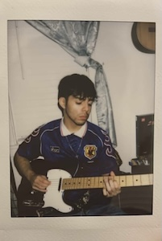

Hey, I'm Erick, I also go by Kairos; either one is fine. I'm currently a junior at Lewis and my major is computer science + music. Outside of school, I am highly dedicated to music and have been very fortunate to be involved in several different bands and ensembles. I mostly play guitar and have been playing for almost six years now. I enjoy recording, producing, mixing and mastering as well as performing for audiences of varying sizes. I've lived my whole life in Joliet, Illinois with my family and have tried my best to be an active member in my city's community. I am also proud to call myself a Gates and Hispanic Scholarship Fund Scholar. I'm excited to take this software engineering course, finally getting some more hands-on experience and a chance to work on a programming project to add to my resume.
Several odd jobs, including
I released two songs over the summer, 'reputación' and 'verano eterno' give them a listen by clicking here